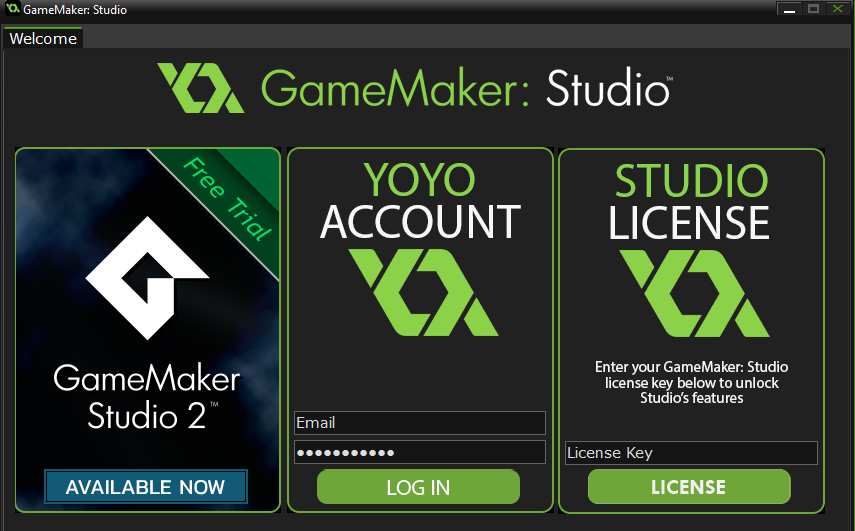

Once you have installed your version of GameMaker: Studio you will be shown the following Welcome Screen:  From here you have three options:
After licensing you will be prompted to restart GameMaker:
Studio. If your licence has any extra modules attached to it, you
may be prompted to download additional files and then restart again
before you can access them.
While GameMaker: Studio itself does not require an internet connection to be used, it will require occasional access to maintain the license activated. If there is no internet connection when requested, your copy of GameMaker: Studio will not work except as the "free" version until such time as this is resolved.
GameMaker: Studio 1.4 is no longer available for sale and as such you can not add extra modules onto your licence now. If you would like to purchase new platforms you would need to get GameMaker Studio 2 (which is a separate product and your current license would not carry over).